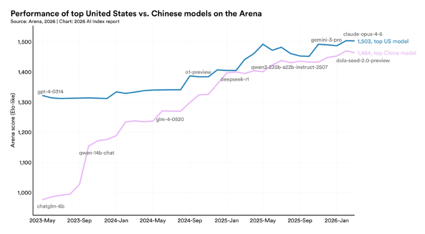

斯坦福大学人类中心人工智能研究所（Stanford HAI）发布2026年人工智能指数报告
本文最后更新于 2026年4月16日 上午
在斯坦福大学人类中心人工智能研究所（Stanford HAI），我们相信人工智能注定将成为 21 世纪最具变革性的技术。然而，除非我们深思熟虑地引导其发展，否则它的红利将无法得到公平分配。
《AI 指数报告》（AI Index） 提供了关于人工智能最全面、最以数据为驱动的深度洞察。作为全球媒体、政府和顶尖企业公认的权威资源，《AI 指数报告》通过对 AI 的技术进展、经济影响及社会效应进行严谨且客观的分析，为决策者、商界领袖和公众提供决策依据。
核心要点
1. AI 的能力并未进入平台期，而是在加速发展，并以前所未有的速度触达更多人群。
2025年，工业界产出了超过 90% 的显著前沿模型（Notable Frontier Models）。其中，有数个模型在博士级科学问题、多模态推理及竞赛数学方面的表现已达到或超过了人类基准。在一项关键的编程基准测试——SWE-bench Verified 中，其表现仅用一年时间就从 60% 飙升至接近 100%。此外，机构的AI采用率已达到88%，且目前每5名大学生中就有4名在使用生成式AI。
2. 中美人工智能模型性能差距已基本消除。
自 2025 年初以来，中美两国的人工智能模型多次交替领先。2025 年 2 月，DeepSeek-R1 曾短暂地与美国顶级模型并驾齐驱，而截至 2026 年 3 月，Anthropic 的顶级模型仅以 2.7%的微弱优势领先。美国仍然拥有更多顶尖的人工智能模型和高影响力专利，而中国则在论文发表量、引用次数、专利产出和工业机器人装机量方面领先。韩国则以其创新密度脱颖而出，人均人工智能专利数量位居世界第一。

3. 美国拥有最多的 AI 数据中心，其中大部分芯片由台积电制造。
美国拥有 5427 个数据中心，是其他任何国家的十倍以上，其能源消耗量也位居世界第一。几乎所有领先的人工智能芯片都由台积电（TSMC）一家公司制造，这使得全球人工智能硬件供应链依赖于台积电——尽管台积电在美国的扩建项目已于 2025 年开始运营。
4. 人工智能模型可以在国际数学奥林匹克竞赛中获得金牌，但却无法可靠地计时——这是研究人员所说的人工智能的崎岖前沿的一个例子。
Gemini Deep Think 在 IMO 上斩获金牌，但其顶级模型读取模拟时钟的正确率仅为50.1%。在 OSWorld 测试人工智能代理跨操作系统执行真实计算机任务的测试中，其任务成功率从 12% 跃升至约 66%，但在结构化基准测试中，它们仍然大约有三分之一的尝试会失败。
5. 负责任的人工智能发展速度跟不上人工智能能力的提升，安全基准滞后，事故数量急剧上升。
几乎所有领先的前沿人工智能模型开发商都会报告其能力基准测试结果，但关于负责任人工智能基准测试的报告仍然零散不全。有记录的人工智能事故数量已从2024年的233起上升至362起。更棘手的是，近期研究发现，提高负责任人工智能的某个维度（例如安全性）可能会降低另一个维度（例如准确性）的水平。
6. 美国在人工智能投资方面处于领先地位，但其吸引全球人才的能力正在下降。
预计到2025年，美国私人人工智能投资将达到2859亿美元，是中国124亿美元投资额的23倍多——尽管考虑到政府的指导性资金，仅看私人投资数据可能低估了中国在人工智能领域的总支出。美国在人工智能创业活动方面也处于领先地位，预计到2025年将有1953家新成立的人工智能公司获得融资，是排名第二国家的10倍以上。然而，自2017年以来，移居美国的人工智能研究人员和开发人员数量下降了89%，仅去年一年就下降了80%。
7. 人工智能的应用正在以前所未有的速度普及，消费者正在从他们经常免费使用的工具中获得巨大的价值。
生成式人工智能在三年内普及率达到 53%，速度超过了个人电脑和互联网，尽管普及速度因国家而异，且与人均 GDP 密切相关。一些国家的普及率高于预期，例如新加坡（61%）和阿联酋（54%），而美国排名第 24 位，普及率为 28.3%。预计到 2026 年初，生成式人工智能工具为美国消费者带来的年价值将达到 1720 亿美元，2025 年至 2026 年间，每位用户的中位价值将增长两倍。
8. 正规教育落后于人工智能，但人们在人生的各个阶段都在学习人工智能技能。
超过80%的美国高中生和大学生现在使用人工智能完成与学习相关的任务，但只有一半的中学制定了人工智能政策，而且只有6%的教师认为这些政策清晰明确。在课堂之外，阿联酋、智利和南非的人工智能工程技能发展速度最快。2022年至2024年，美国和加拿大新增人工智能博士的数量增长了22%，而这些新增博士大多选择在学术界而非工业界就业。
9. 人工智能主权正成为国家政策的一个决定性特征，但能力仍然不均衡，即使开源开发有助于重新分配参与者。
各国人工智能战略正在扩展，尤其是在发展中经济体中，政府对人工智能超级计算的投资也在同步增长——这表明各国对国内人工智能生态系统的控制力日益增强。然而，模型生产仍然集中在美国和中国。开源开发正在重新分配参与权，世界其他地区的贡献量在 GitHub 上已经超过欧洲，并接近美国，从而推动了更多语言多样化的模型和基准测试的出现。
10. 人工智能专家和公众对这项技术的未来有着截然不同的看法，全球对管理人工智能的机构的信任度也参差不齐。
在人工智能如何影响人们的工作方面，73%的专家预期其会产生积极影响，而公众的这一比例仅为23%，两者相差50个百分点。人工智能对经济和医疗保健的影响也存在类似的认知差异。在全球范围内，人们对政府监管人工智能的能力信任度各不相同。在受访国家中，美国民众对其政府监管人工智能能力的信任度最低，仅为31%。在全球范围内，欧盟在有效监管人工智能方面比美国或中国更受信任。